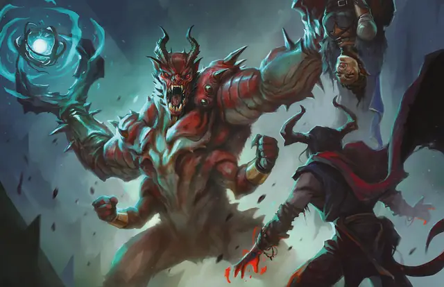

Глабрезу
Glabrezu
Большое Исчадие (Демон), Хаотичное Злое

Класс Защиты 17 Инициатива +6 (16)
Хиты 189 (18к10 + 90)
Скорость 40 футов
| мод | спас | ||
|---|---|---|---|
| СИЛ | 20 | +5 | +9 |
| ЛОВ | 15 | +2 | +2 |
| ТЕЛ | 21 | +5 | +9 |
| мод | спас | ||
|---|---|---|---|
| ИНТ | 19 | +4 | +4 |
| МДР | 17 | +3 | +7 |
| ХАР | 16 | +3 | +7 |
Сопротивление урону Огонь, Холод, Электричество
Иммунитеты Яд; Отравленный
Чувства пассивное Восприятие 17, Истинное зрение 120 футов
Языки Бездны, Телепатия 120 фт.
Опасность 9 (5 000 опыта; БВ +4)
Особенности
Восстановление демона. Когда глабрезу умирает за пределами Бездны, его тело растворяется в ихоре и в тот же миг заново возрождается со всеми Хитами где-то в Бездне.
Сопротивление магии. Глабрезу совершает с Преимуществом спасброски от заклинаний и прочих магических эффектов.
Действия
Мультиатака. Глабрезу совершает две атаки Клешнёй и использует Избиение или Сотворение заклинаний.
Клешня. Бросок рукопашной атаки: +9, досягаемость 10 фт. Попадание: 16 (2к10 + 5) Рубящего урона. Если цель — существо Среднего размера или меньше, она становится Схваченной (Сл освобождения от захвата 15) одной из двух клешней.
Избиение. Спасбросок Ловкости: Сл 17, одно Схваченное глабрезу существо. Провал: 15 (3к6 + 5) Дробящего урона. Успех: Только половина урона.
Сотворение заклинаний. Глабрезу сотворяет одно из следующих заклинаний, не нуждаясь в Материальных компонентах (заклинательная характеристика — Интеллект, Сл спасброска заклинаний 16):
Неограниченно: Обнаружение магии, Рассеивание магии, Тьма
1/день каждое: Полёт, Слово силы: ошеломление, Смятение
Бонус мастерства +4
Среда обитания Бездна
Сокровища Реликварные
Глабрезу
Демон заблуждения и западни
Глабрезу воплощают в себе обман и хищное коварство. Эти хитрые демоны знают, что самая лучшая ловушка — та, в которую сам себя загоняешь. Несмотря на массивные когти и огромную физическую силу, глабрезу особенно искусны в лести и манипуляциях и легко заставляют своих жертв замыкаться в себе и причинять вред другим.
В Бездне глабрезу выступают в роли советников высших демонов или охотятся поодиночке. Они разыскивают пути, ведущие на Материальный план, и обожают, когда их призывают маги. Эти демоны с охотой служат смертным, но убеждают их предавать союзников и воплощать в жизнь свои самые самонадеянные фантазии. Глабрезу старается убить вызвавшего его мага, как только тот совершит непоправимое злодеяние, после которого душа смертного окажется обречённой на вечные мучения в Бездне.